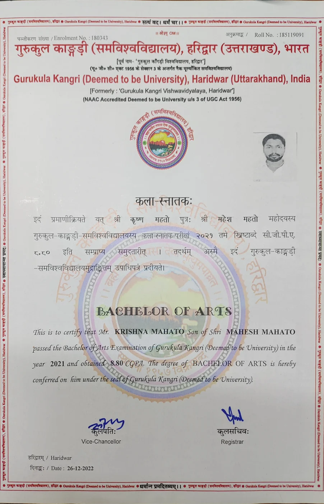
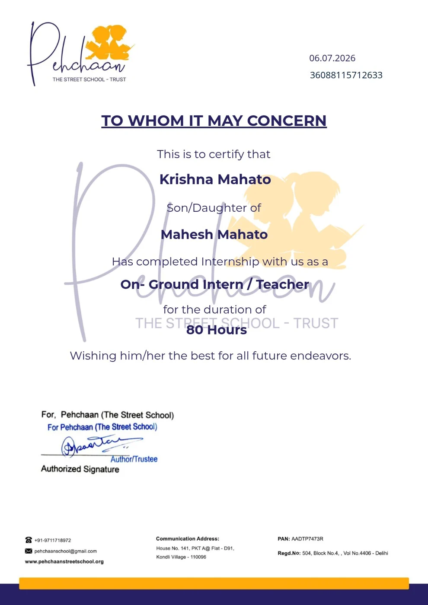
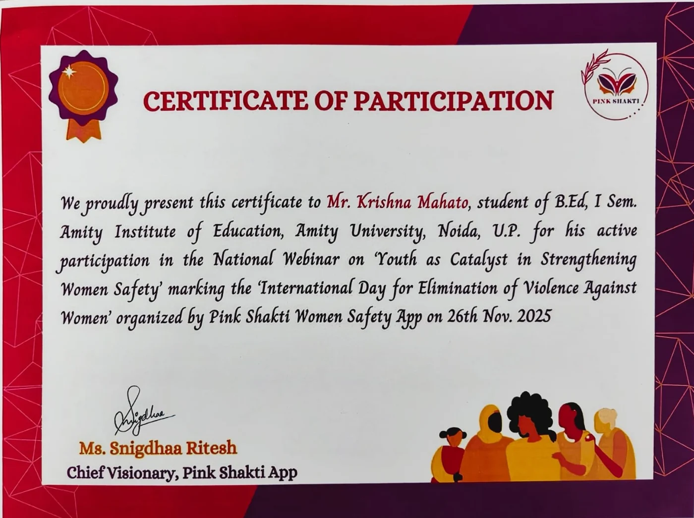
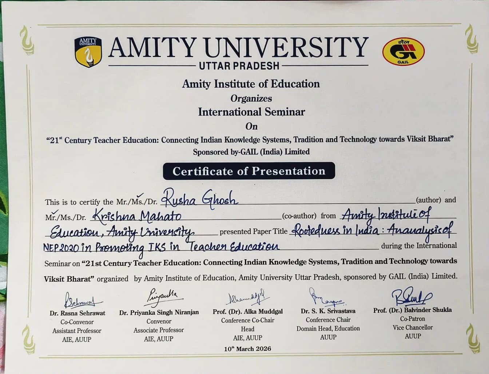

Academic
Bachelor of Arts
Degree certificate recording a CGPA of 8.80.
View certificate : Bachelor of Arts (new tab)Credentials
Academic achievement, teaching experience and professional learning, with supporting documents.
Research & presentation · March 2026
Co-author and presenter on NEP 2020 and Indian Knowledge Systems in teacher education, at the international seminar organised by Amity Institute of Education.
No credentials match this search.

Academic
Degree certificate recording a CGPA of 8.80.
View certificate : Bachelor of Arts (new tab)
Teaching
Certificate of completion as an on-ground intern / teacher.
View certificate : Teaching internship · 80 hours (new tab)
Professional learning
Participation in the national webinar on women’s safety.
View certificate : Youth as Catalyst in Strengthening Women Safety (new tab)
Presentation
Co-author and presenter of “Rootedness in India: An analysis of NEP 2020 in Promoting IKS in Teacher Education”.
View certificate : Rootedness in India: NEP 2020 & teacher education (new tab)